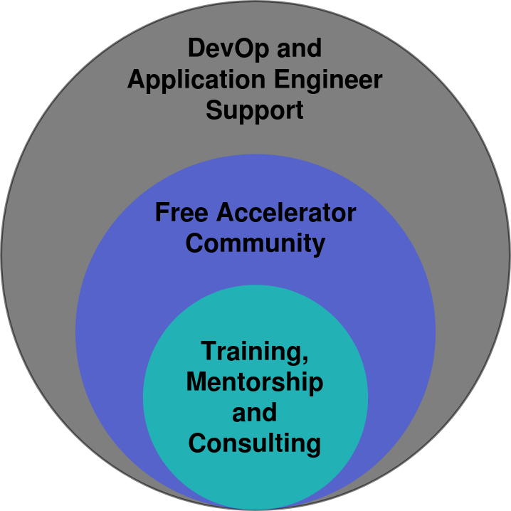

Free and Open Accelerater for Sustainable Innovation
{{< blocks/link-down color="info" >}} {{< /blocks/cover >}} {{% blocks/lead color="white" %}} Protontypes provides an [**Free Laboratory**](https://discourse.protontypes.eu) to bring together developers, investors and entrepreneurs in the realization of sustainable innovation. It is a place for interdisciplinary engineers and users to exchange knowledge and ideas on how to create business and innovation with the support of the community. Our focus is on the transfer of free techniques from robotics and artificial intelligence to sustainable areas such as renewable energies and mobility. {{% /blocks/lead %}} {{% blocks/lead color="blue" %}}  {{% /blocks/lead %}} {{% blocks/lead color="white" %}} The principle of open scientific proof as in physics enables us to conquer the world. Open data, technology, evidence and software allow facts to be described and easily reproduced by others. It creates vendor-independent ecosystems and standards to advance technology. Today, about 70% of source code analyses for security and risk assessment are already open source.[[1]](https://www.synopsys.com/blogs/software-security/5-open-source-trends-2020-ossra/) Find out more about the [**success story of free innovation**](/about_free_innovation/). {{% /blocks/lead %}} {{< blocks/section color="dark" >}} {{% blocks/feature icon="fa fa-tools" title="Free and Open Acceleration" url="https://github.com/protontypes/awesome-robotic-tooling" %}} Benefit from professional experience in automotive, logistics and robotics. Find the suitable tooling for accelerating your innovation. {{% /blocks/feature %}} {{% blocks/feature icon="fa fa-book-open" title="Free and Open Investment" url="https://github.com/protontypes/libreselery" %}} All investments initiated by protontypes will be distributed between contributors by LibreSelery. {{% /blocks/feature %}} {{% blocks/feature icon="fa fa-leaf" title="Free and Open Community" url="https://discourse.protontypes.eu/" %}} Post your project and find the right tools, contributors and funding with the community. {{% /blocks/feature %}} {{< /blocks/section >}}